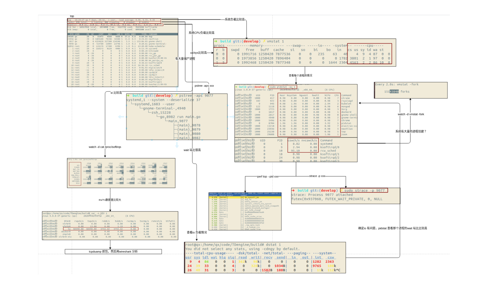

学习思路
建立起整体性能的全局观
学习内容
- 平均负载
- 含义
- 1分钟、5分钟、15分钟时间段监控
- 平均负载的合理性判定
- 工具uptime使用
- /proc/cupinfo查看cup相关信息
- 工具top使用
- 平均负载高于cpu数量70%就要进行排查了
- 工具uptime、stress、systat、mpstat、pidstat使用
- cpu上下文切换
- cpu寄存器
- 程序计数器PC
- cpu上下文与cpu上下文切换
- 进程上下文切换、进程上下文切换、中断上下文切换
- 内核空间 – 内核态
- 用户空间 – 用户态
- 工具vmstat、pidstat、sysbench、man、watch使用
- 自愿上下文切换
- 非自愿上下文切换
- 中断
- 进行中断会出现什么情况
- /proc/interrupts观察中断情况
- cpu使用率
- 节拍率HZ，使用/boot/config查看配置情况
- USER_HZ，默认100
- /proc/stat与/proc/[pid]/stat查看cpu使用率
- 工具top、ps、pidstat、perf top、perf recod、perf report、ab、pstree、execsnoop、ftrace使用
- 僵尸进程
- 进程状态区分（R\D\Z\S\I）
- 进程组、会话
- iowait分析
- 工具ps aux、top、dstat、pidstat、strace、perf record、perf report、pstree使用
- 软中断
- 异步处理机制
- 上半部与下半部
- 外卖配送例子
- /proc/softirqs
- /proc/interrupts
学习感悟
要从了解基本概念，从系统的原理着手出发，linux下的工具比较齐全，要充分了解各工具的作用及应用场景
CPU相关的指标
